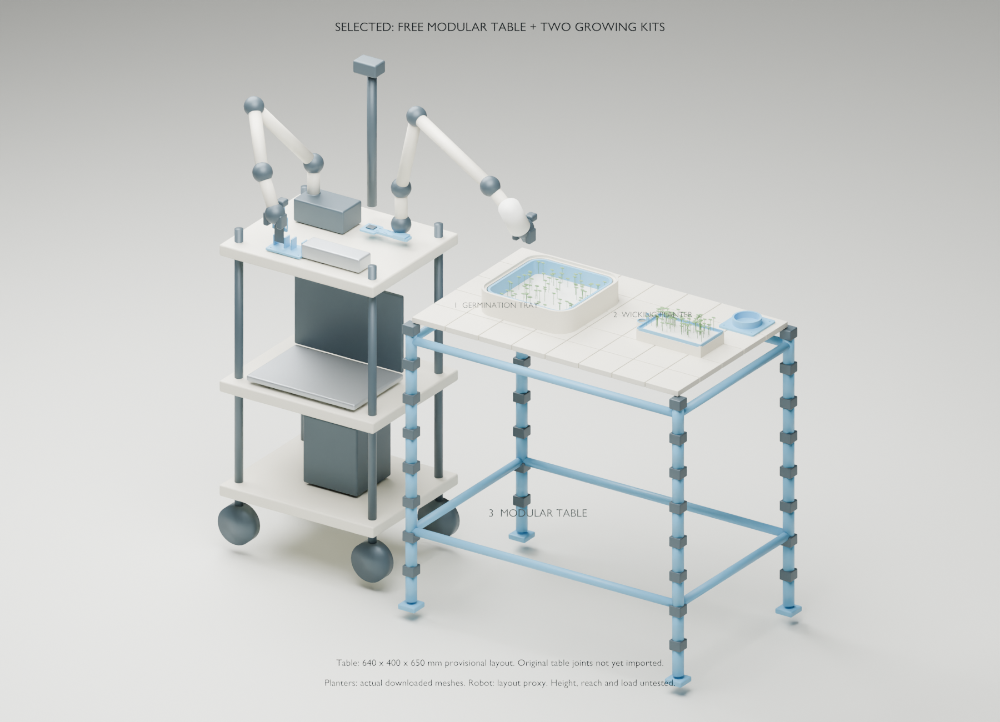

92% on Sep 22 at ~11:01 ET; completion not confirmed.
2
Germination cover + three cress wick insets
188.17 g · 6h42m
Prepared; not started by this update.
3
Perforated insert + cress trough, holder and final inset
264.58 g · 9h32m
Prepared; not started by this update.
All nine pieces total 762.71 g and about 26h24m of sliced time. Plates 2 + 3 total 16h14m; allow cooling, removal, setup and possible reprints. Each plate needs the previous print removed and the bed checked before starting. No table needs printing for the growing test.
Recorded settings: 0.20 mm layers, three walls, five top/bottom layers, 15% infill, no supports; Hyper PLA preset, 220°C nozzle and selected bed preset at 50°C. First-layer perimeter 30 mm/s; outer walls/top surface 80 mm/s. These are the saved job settings, not proof of watertightness. Actual filament brand was not established.
Import with the intended K1 Max profile and inspect before slicing. We do not publish auto-run G-code here. The app showed an “Unknown error” banner alongside normal printing; physical completion/first-layer quality must be checked. Creality AI consent/review was not verified, so AI detection is not counted as a passed print check.
Chosen: Modular Table (100% printed)
Aj_Awesome1’s free CC0 design uses printed top tiles, rods and snap connectors. This is the selected direction for a full expandable table with legs. The robot remains on its separate cart; the table only carries the growing kits.
File blocker: the received print_files.zip contains five pre-sliced Prusa MINI G-code files and a PDF. We still need ALL MODEL FILES (538 KB), the 13 editable 3MF models. Do not run the MINI files on the K1 Max.
The Blender table is a labeled 640 × 400 × 650 mm layout proxy, not the actual designer’s joints. Final dimensions, connector orientation, wet load, stability, long-term PLA sag and robot reach are untested. Import original parts before creating a real print quantity list. No reliable table filament/time estimate exists yet.

Planter geometry is real; table and robot envelopes illustrate placement. A table render is not manufacturing approval.Download current Blender assembly
Small printed parts still to fit
Moisture probe holder
Carrier and clamp prototypes exist. Add a depth stop referenced to the tray rim and gentle compliance before touching thin paper. Measure the delivered board, gripper and growing depth; don’t assume the rigid prototype is ready.
Light paddle
One grippable carrier holds one BH1750 face upward. Keep the sensing face clear of the arm/cable shadow; strain-relieve the moving cable. Tool is parked when watering.
Bottle rest and spout
The parked bottle needs repeatable position. The Nalgene wide-mouth container needs a controlled outlet or a replacement household bottle. Shown spout is a placeholder, not an exported working part.
Dry enclosure and locating stops
Keep ESP32/boards dry, secure leads and locate the planters repeatably. Cable routes, tool pockets and fasteners depend on measured hardware.
Download V2 tool prototypes for fit evaluation. The old short pod decks/legs are superseded by the selected full-table direction; they are retained only in the historical design, not part of this print recommendation.